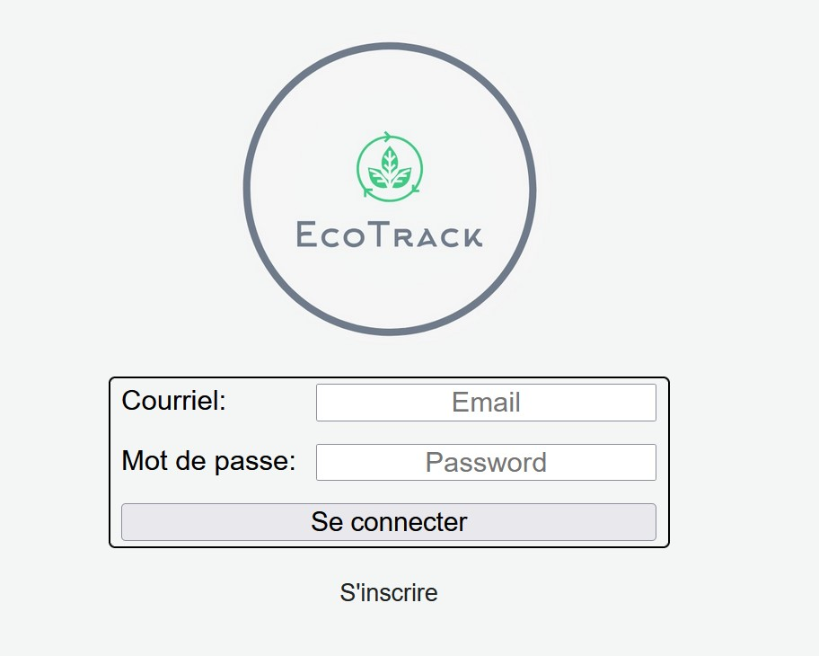

EcoTrack
Difficulté : 7/10
- Implémentation d’un système d'inscription et de gestion des comptes utilisateurs.
- Conception d’un calculateur dynamique d’empreinte carbone.
- Développement d’un suivi personnalisé des statistiques et des conseils adaptés.
- Comparaison des impacts environnementaux à des niveaux régional et mondial.
- Développement web et mobile pour une expérience utilisateur multi-plateforme.

Technologies : C#, .NET, Entity Framework, PostgreSQL, JWT, HTML,CSS, Javascript, React
FactuEasy
Difficulté : 9/10
- Réalisation d'une application web pour l'extraction automatisée de données à partir de factures téléversées.
- Intégration d'un système de reconnaissance de caractères (OCR) pour transformer les factures en texte
- Extraction automatisée des informations pertinentes, comme les articles et les prix.
- Utilisation de réseaux de neurones pour la reconnaissance d'image et d'apprentissage par transfert pour améliorer l'efficacité.
- Application de techniques de régularisation pour prévenir le surapprentissage.
- Gestion du biais et de la variance pour optimiser la qualité des prédictions.
- Développement complet alliant frontend, backend et concepts avancés d'intelligence artificielle.


Technologies : Python, Docker, PostgreSQL, Flask, Peewee, TensorFlow, Kubernetes, JavaScript, React